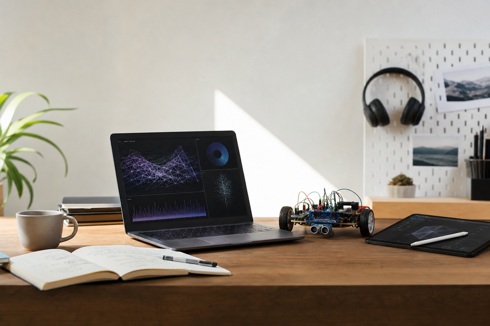

Visualization
Exploratory Data Dashboard
A placeholder for a dashboard or analysis project. Add the dataset, tools, key insight, and a live demo or GitHub link.
Recent CS Graduate
I like turning technical ideas into experiences people can explore: clear visual systems, interactive tools, and robotics projects that connect code to the physical world.

About
I am a recent computer science graduate interested in making software that is visual, interactive, and grounded in real-world problem solving. My work sits at the intersection of full-stack engineering, creative coding, data storytelling, and robotics.
This first version is intentionally simple: it gives us a clean structure to build on, then we can swap in your real bio, project details, resume link, photos, and deployment domain.
Projects
Visualization
A placeholder for a dashboard or analysis project. Add the dataset, tools, key insight, and a live demo or GitHub link.
Storytelling
A space for a data story with charts, annotations, and user controls that make an insight easier to understand.
Creative Coding
A placeholder for a p5.js, WebGL, audio-reactive, or game-like project where the user can manipulate the system directly.
UX Prototype
A project slot for an interface prototype, installation concept, or interaction study.
Hardware + Software
Add a robotics project here with sensors, control logic, simulation notes, and a short demo video or build log.
Systems
A place to show computer vision, planning, controls, embedded work, or robot-human interaction research.
Contact
Replace these with your real links when you are ready: Email, LinkedIn, and GitHub.